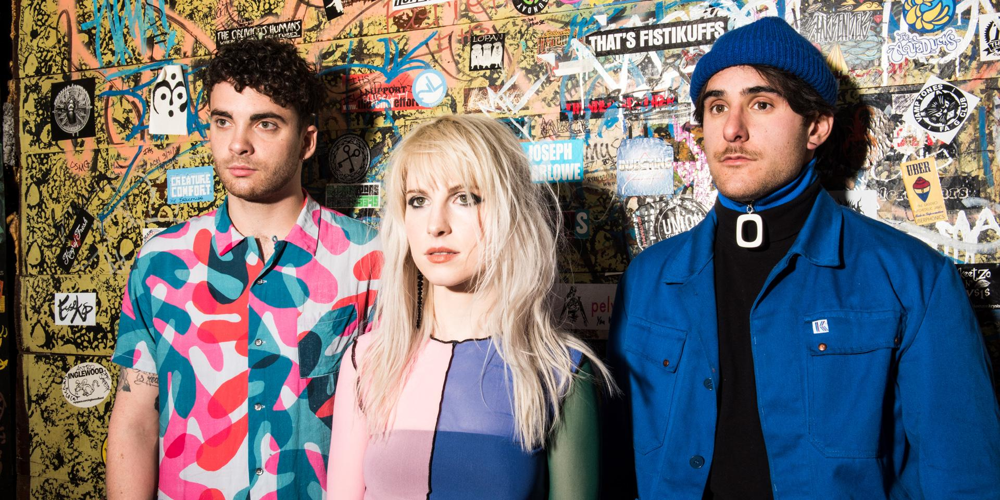

Paramore is an American rock band from Franklin, Tennessee, formed in 2004. The band currently consists of lead vocalist Hayley Williams, guitarist Taylor York and drummer Zac Farro. Williams and Farro are founding members of the group, while York, a high school friend of the original lineup, joined in 2007. Williams is the only member to appear on all five of Paramore's studio albums and has been the only constant member of the band.
The band's second album, Riot!, was released in 2007. Due to the success of the singles "Misery Business", "Crushcrushcrush", and "That's What You Get", Riot! was a mainstream success and was certified Platinum in the United States. They then received a Best New Artist nomination at the 2008 Grammy Awards. Their 2009 follow-up, Brand New Eyes, is the band's second-highest charting album to date, landing at number two on the Billboard 200 with 175,000 first week sales. It produced the top-forty single "The Only Exception" and went platinum in Ireland and the UK, as well as gold in the US, Canada, Australia, and New Zealan